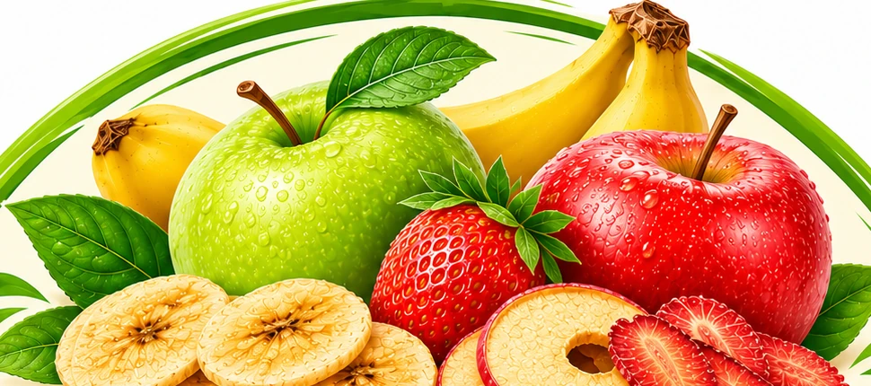
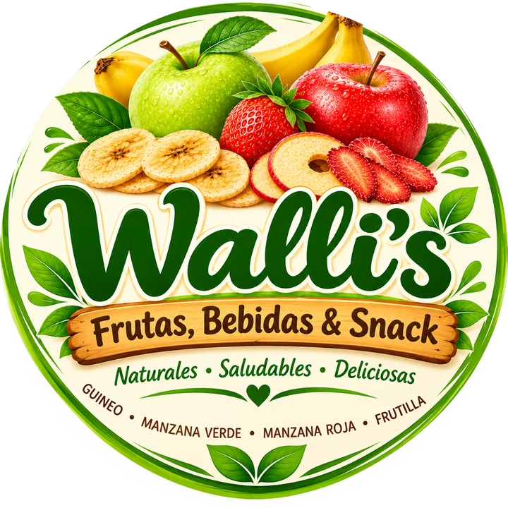
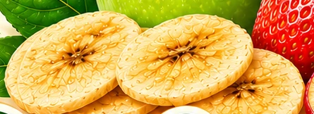
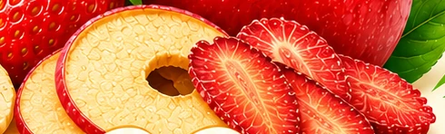
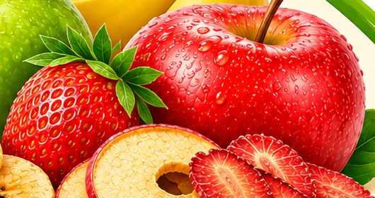

Línea 1 · Frutas naturales
Walli’s Mix
La mezcla frutal de la casa para cuando buscas variedad y dulzor natural. Una opción práctica con la fibra y el sabor propio de sus frutas.
15 g porción individual
Pedir MixFrutas, bebidas & snacks hechos en Ecuador
Fruta deshidratada y snacks crocantes para acompañar tus días ocupados: prácticos, sabrosos y elaborados sin conservantes ni químicos añadidos.

Cuatro formas de elegir un snack con ingredientes que reconoces. Encuentra tu sabor, conoce lo que aporta cada línea y pide el que vaya contigo.

Línea 1 · Frutas naturales
La mezcla frutal de la casa para cuando buscas variedad y dulzor natural. Una opción práctica con la fibra y el sabor propio de sus frutas.
15 g porción individual
Pedir Mix
Línea 1 · Guineo con frutos secos
Guineo deshidratado con frutos secos para esos momentos en que quieres algo crocante y satisfactorio, con energía y fibra de origen natural.
15 g por porción
Pedir Bananuts
Línea 1 · Láminas de temporada
Láminas de fruta de temporada, sin azúcar añadida. Un snack ligero, dulce por naturaleza y fácil de llevar a donde vayas.
15 g por porción
Pedir Sweet
Línea 2 · Chips crocantes
Fruta de temporada con sazonador natural picante. Una alternativa crocante y de sabor intenso para salir de la rutina de las botanas procesadas.
15 g por porción
Pedir SpicyCuando el día va rápido, elegir mejor no debería ser complicado. Walli’s te da una alternativa simple, rica y lista para llevar.
Cómo lo hacemos
No hacemos producción masiva. Cada lote se prepara en pequeñas cantidades y con parámetros controlados para cuidar la frescura, la textura y la calidad de cada snack.
1 porción al día
Equivalencia referencial de fruta usada en el proceso de deshidratación. La porción final es de 15 g. Revisa siempre el etiquetado del producto.
Mi conexión con la deshidratación comenzó hace años elaborando infusiones y tomó fuerza en 2024, al colaborar en un proyecto universitario.
Inspirada en mi nombre, Wallenka, y impulsada por el cariño de mi familia, creé Walli’s con el sueño de ofrecer productos naturales y nutritivos. Hoy arrancamos con frutas deshidratadas y snacks crocantes, con la mirada puesta en crecer hacia tés artesanales, bebidas funcionales y dulces tradicionales.
Walli’s es trabajo, entusiasmo y pasión por lo natural.
Elaborar y comercializar snacks, frutas deshidratadas, bebidas tradicionales e infusiones funcionales 100% naturales bajo el concepto Small Batch, rescatando la tradición gastronómica andina y promoviendo un estilo de vida saludable desde Ecuador.
Ser una marca líder y reconocida en alimentación consciente, snacks artesanales y bienestar a nivel nacional, presente en cadenas de alimentos, supermercados y tiendas orgánicas, con miras a la exportación.
¿No encuentras tu respuesta? Escríbenos y te ayudamos.
Es producir en lotes pequeños con parámetros controlados, en lugar de producción masiva, para garantizar máxima frescura, estándares de calidad e inocuidad.
No. Todos los productos de Walli’s son sin conservantes ni químicos añadidos. Walli’s Sweet, además, es sin azúcar añadida.
Porque 15 g de fruta deshidratada equivalen a consumir entre 120 g y 150 g de fruta fresca. Es un formato individual y práctico para el consumo diario.
Mix son frutas naturales deshidratadas. Bananuts combina guineo deshidratado con frutos secos. Sweet son láminas de frutas de temporada, sin azúcar añadida. Spicy es fruta de temporada sazonada con sazonador natural picante.
Escríbenos por WhatsApp o desde el formulario de contacto y te indicamos cómo y dónde conseguir tu pedido.
Sí. Estamos trabajando en tés artesanales, bebidas funcionales listas para tomar y dulces tradicionales en almíbar. Déjanos tus datos y te avisamos.
Pedidos y contacto
Cuéntanos qué te interesa y te respondemos con disponibilidad, precios y formas de entrega.